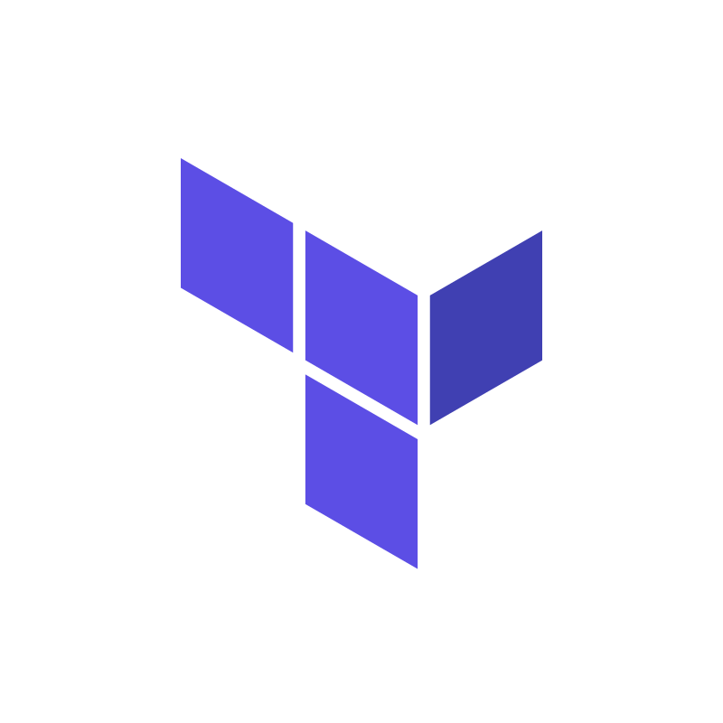
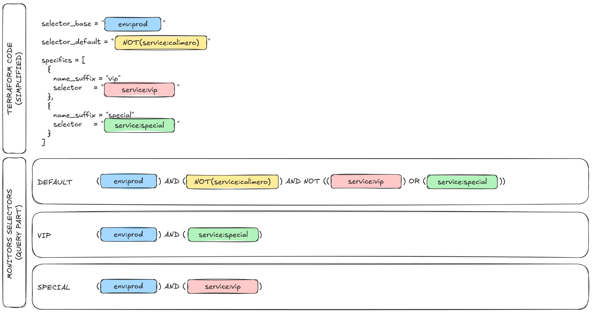

Datadog monitoring with IaC¶
Enable complete, replicable and refactored monitoring setup by creating IaC modules with Terraform.

Terraform Datadog
Datadog AWS
AWS
This project involves a significant amount of innovation to tackle the challenges of generating fully automated documentation alongside fully automated Terraform resources.
Need & Benefits¶
When it comes to monitoring, the system can easily scale to hundreds of monitors, each tracking thousands of items. While some monitors are global, there are many exceptions. In addition to the usual configuration updates, we aimed to create a system that provides the exploitation team with clear, actionable instructions for each alert or warning.
This leads to the following set of needs:
- Replicability
- Versioning
- Flexibility & Customization
- Add extra documentation natively
- Oncall status management
- Modification tracking (through tickets)
There are many additional smaller requirements and needs, but only the main ones are listed here.
My roles & Missions¶
- Lead
I presented the project and taken it to its full potential. - Engineer
I perform the realisation of the project. - Maintainer
I'm maintaining the project and continuously improving it.
Global workflow goal¶
flowchart LR
operator(("Operator"))
terraform("Terraform<br/>project")
datadog("Datadog")
aws("AWS S3")
pipelines("Document generation<br/>pipelines")
wiki("Wiki")
operator -->|Manage| terraform
operator -->|Manage| pipelines
terraform -->|Create monitors| datadog
terraform -->|Create docfests| aws
pipelines -->|Retrieve docfests| aws
pipelines -->|Generate pages| wikiThis project is using the documentation generation.
Disclaimer
- Since this is a large and complex project, I won't be able to put all the details in here.
- This page is intended for technical people with a good understanding of Terraform and basic knowledge of Datadog.
Module monitor-base¶
A Terraform module that abstracts the creation of both the monitor and its associated docfest. This serves as the core unit of the system.
Key Features¶
-
Comprehensive Configuration Support
Access all available Datadog provider configurations, along with documentation-specific variables. -
On-Call Management
Streamline on-call schedules and responsibilities. -
Ticket History Tracking
Maintain a detailed record of ticketing activity. -
Notification Management
Efficiently handle and customize notifications. -
Docfest Export Configuration
Export documentation seamlessly, either locally or to an AWS S3 bucket. -
Asset Sources and Overrides Processing
Process asset sources with support for overrides. -
Automated Naming Conventions
Simplify and enforce consistent naming standards. -
And Much More!
Explore additional features designed to enhance productivity and efficiency.
Module monitors-group¶
A Terraform module that manages multiple monitors with an extensive usage of the monitor-base module.
The main feature of this module is its ability to manage a default monitor and many specifics
Default & Specifics¶
That is the most complicated feature of this project: enabling both global and detailed specific monitoring.
To achieve this, I introduced the concept of selectors. Selectors are Datadog query components that refine the final result.
We have three types of selectors:
-
Base Selector
Applied to all queries. Ideal for tasks like environment selection. -
Default Selector
Applied only to the default query. Useful for disabling monitoring on certain items. -
Specific Selectors
- One selector per specific monitor.
- Applied directly to specific monitors.
- Inverted for the default monitor to exclude specifics from it.
To illustrate the logic:

Items¶
There is an issue with the plain text selectors implementation: while we can build specific queries using Terraform templates and strings, the documentation cannot list all the items monitored by these queries (such as services or endpoints).
This issue could lead to delay in the contractual delivery and reporting (management tasks)
We would like to have a clean documentation of the items monitored by the specifics.
Introducing items:
Items are simply variables within the module. If present, they are used to generate the selector.
Example
module "group-without-items" {
# ...
specifics = [{
name_suffix = "without_items"
selector = "(${join(") OR (", [
"service:service01 AND resource_name:post_/endpoint/abc",
"service:service02 AND (resource_name:post_/endpoint/abc OR resource_name:post_/endpoint/xyz OR resource_name:post_/endpoint/def)"
])})"
}]
}
module "group-with-items" {
# ...
specifics = [{
name_suffix = "with_items"
selector = "($${join(") OR (", items_formatted)})"
item_format = "service:$${service} AND resource_name:$${method}_$${endpoint}"
items = [
{service = "service01", method = "post", endpoint = "/endpoint/abc"},
{service = "service02", method = "post", endpoint = "/endpoint/abc"},
{service = "service02", method = "post", endpoint = "/endpoint/xyz"},
{service = "service02", method = "post", endpoint = "/endpoint/def"}
]
}]
}
By providing more readable code, items will also be used by the documentation to generate a list of what is monitored by the specifics.
Overridable assets¶
To further decouple the documentation and other assets subject to frequent changes, assets can be made overridable.
The Terraform module accepts a list of asset sources (directories). When searching for an asset, it iterates through the sources and returns the first valid one.
Example of an instructions override
All monitors currently share the same default instructions (which are empty). However, we aim to define specific instructions for handling CPU, memory, and latency alerts.
-
Monitor Default Instructions
Common instructions that apply to every monitor of the same type. Typically generic. -
Environment-Specific Instructions
Instructions that vary based on the environment, such as production, staging, or development. -
Server-Specific Instructions
Some servers may require unique actions, like handling memory-related alerts differently.
We can organize our assets like so:
.
└── assets/
├── defaults/
│ ├── instructions-critical.md
│ ├── description_long.md
│ ├── query.tftpl
│ └── name.tftpl
└── cpu-utilization/
├── defaults/
│ ├── instructions-critical.md
│ ├── description_long.md
│ └── query.tftpl
└── prod/
├── defaults/
│ ├── query.tftpl
│ └── instructions-critical.md
└── my-special-server/
└── instructions-critical.md
At first, this approach may seem more complicated than necessary. However, monitoring inevitably scales to hundreds, if not thousands, of monitors. It’s better to start with a strong and organized foundation.
module "my-monitor-prod" {
# Default monitor configuration
basename = "ec2_cpu_utilization"
asset_sources = [
"assets/cpu-utilization/prod/defaults",
"assets/cpu-utilization/defaults",
"assets/defaults"
]
# ...
# Specific monitors that create exceptions on the default one
specifics = [{
name_suffix = "my_special_server"
selector = "server_name:my-special-server"
asset_sources = [
"assets/cpu-utilization/prod/my-special-server",
"assets/cpu-utilization/prod/defaults",
"assets/cpu-utilization/defaults",
"assets/defaults"
]
# ...
}]
}
As a result, we will have two monitors:
-
Default Monitor
Monitors CPU utilization for all servers (except the special one). -
Special Server Monitor
Dedicated to monitoring the CPU utilization of the special server.
Note: Only the instruction-critical asset was overridden for the special monitor. All other assets were retrieved from lower-priority sources.
Even though this example is largely incomplete, it provides insight into how overridable assets work.
Overridable assets code
Implementing this feature doesn't require overly complex code.
locals {
__assets_names = [
# ...
"query.tftpl",
"description_long.md",
"instructions_alert_recovery.md",
"instructions_alert_trigger.md",
"instructions_no_data_recovery.md",
"instructions_no_data_trigger.md",
"instructions_warning_recovery.md",
"instructions_warning_trigger.md",
# ...
]
# Raise an index error if no valid template was found.
templates = {
for asset_name in local.__assets_names :
asset_name => compact([
for source in var.asset_sources :
(fileexists("${source}/${asset_name}") ? "${source}/${asset_name}" : null)
])[0]
}
}
Documentation manifests (Docfest)¶
An external JSON or YAML file contains all the necessary information for generating the documentation.
This approach offers the key benefit of decoupling the Terraform code from the documentation generation process, resulting in easier maintenance and evolution. With a clear API contract, both components can be managed and maintained by separate teams or individuals.
Docfest example
Here is an incomplete example of what a docfest can look like.
apiVersion: docfest.io/v1alpha1
kind: DatadogMonitor
metadata:
name: my-monitor-prod
labels:
environment: prod
perimeter: my-company-app
cern: my-monitor
spec:
tags:
createdby: terraform
team: devops
query: >-
min(last_5m):avg:aws.ec2.cpuutilization{env:prod} by {name} >= 90
threshold_alert_trigger: 90
threshold_alert_recovery: 80
instructions_critical_trigger: |
1. Connect to the server
2. Identify the process that consumes the most CPU
3. If applicative, contact the team in charge
4. If system, find the appropriate documentation and troubleshoot
Anti-virus can consume a lot of CPU sometimes. If it is the case, look for the logs, the server
may have been infected.
In the end, docfests play a key role in this project. They allow us to add as much documentation and information as needed without forcing anything into Datadog. This approach provides both flexibility and control over our documentation.
Docfests resemble Kubernetes manifest
Docfests are intentionally designed to resemble Kubernetes manifests. First, this allows us to differentiate between various APIs. Second, it lays the groundwork for potentially creating a controller in the future to further automate the documentation generation process.
The concept of docfests extends far beyond this project, as it applies to everything we can deploy with IaC and more.
Conclusion¶
In conclusion, this project combines Terraform with Datadog with one primary goal: to enable fast, reliable, and flexible monitoring operations.
It required advanced Terraform coding techniques and creativity, all while keeping things accessible to junior engineers. This project is designed to support monitoring operations for the long term.